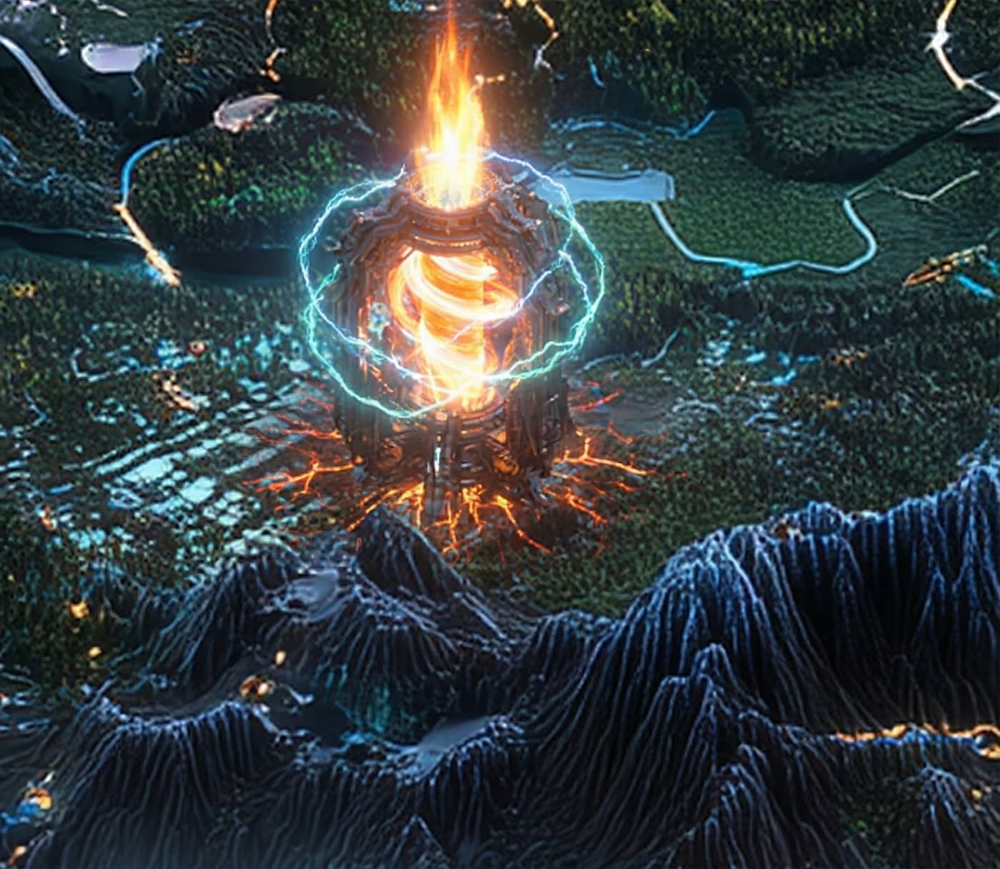

Record // MACRO PLAYABLE TEARDOWN
FTX FALLOUT CRATER

The meteor that hit closest to Solana — and nearly took the whole chain with it.
▶ Play this teardown — operate the mechanism yourself →What happened
When FTX and Alameda collapsed in November 2022, the fallout hit Solana harder than any other chain: SOL was the ecosystem most associated with them, and confidence cratered alongside the price. But the damage traveled along dependency edges, not the blockchain — custody (Sollet-wrapped assets), liquidity (Alameda market-making), the Foundation's own disclosed FTX balance, and one hard technical break: Serum, whose program-upgrade keys were held by FTX. The chain itself never stopped producing blocks. Within about 48 hours the community forked Serum into OpenBook under fresh keys, restoring the order-book liquidity that Raydium and others depended on.
Why Solana remembers it
It became a brutal stress test that separated builders who stayed from capital that left, and a lasting lesson in systemic risk: on a permissionless chain, contagion spreads through custody, liquidity, and keys — your dependency graph — not through consensus. The crater is not about price; it marks the period the ecosystem had to prove it was more than an exchange-era narrative, and the OpenBook fork showed the infrastructure was recoverable because no one owned the chain itself.
On the map
A scorched impact crater — the closest call on the map.